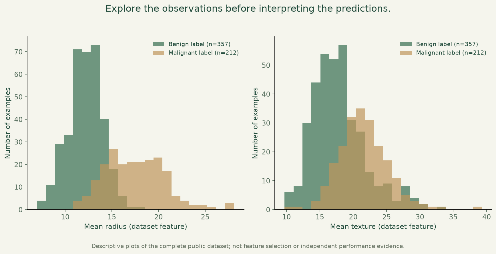

Breast cancer classification.
Compare three classifiers, inspect their mistakes and understand the limits of a single public dataset.

What I built
Refined the original educational investigation into an auditable comparison, with saved predictions, confusion matrices and a reproducible evaluation trail.
Why it matters
A useful model starts with understanding the data and evaluating it carefully. This investigation shows the steps between a dataset and an interpretable comparison.
How it works
- 01
Inspect the 569 source observations and retain all 30 numeric features, excluding identifiers and labels.
- 02
Use a deterministic stratified training/holdout split, with preprocessing fitted inside training-only cross-validation.
- 03
Compare errors on the same reused holdout, reconcile saved predictions with metrics and reproduce the figures.
What it demonstrates
Exploratory analysis, supervised learning, preprocessing, classifier comparison and critical interpretation of results.
Evidence, with context.
All 30 features; 398 training examples; 171 examples in a repeatedly reused exploratory holdout. False negatives among 64 malignant-labelled holdout examples: Logistic regression 7, Decision tree 10, Random forest 6. Training-only five-fold cross-validation keeps preprocessing inside each fold. Saved predictions reconcile with the metrics and confusion matrices; repeated runs reproduce the same result files. No independent or clinical validation.
Verified source: e8240c77b226 · Tests and visual capture ↗



Scope and limitations
This is educational analysis of a public teaching dataset, not a diagnostic system. The holdout has been reused across models and portfolio iterations, so it is exploratory rather than an untouched final test. No independent cohort, clinical validation, calibration study or causal interpretation is claimed. False negatives are shown explicitly.
Visual provenance and source attribution are recorded in the evidence register ↗.
Under the surface.
Architecture, methods and improvements
Seed 40; stratified 70/30 split; five stratified training-only CV folds; all 30 features. Logistic regression uses a StandardScaler pipeline; decision tree and random forest use fixed seeds. Saved prediction rows, labelled confusion counts, feature names, partition indices, dependency versions and dataset SHA-256 make the measured outputs auditable. Regression tests reconcile metrics and matrices and reproduce output files byte-for-byte.
Try it locally
Install requirements.txt, run python evaluate.py, python -m unittest discover -p "test_*.py" -v and python plot_portfolio.py. The original notebook remains available separately.
The portfolio is a static GitHub Pages site. Server applications run locally; the portfolio does not collect bookings, credentials or payments.